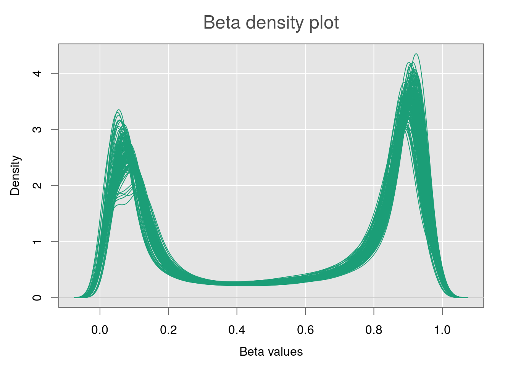
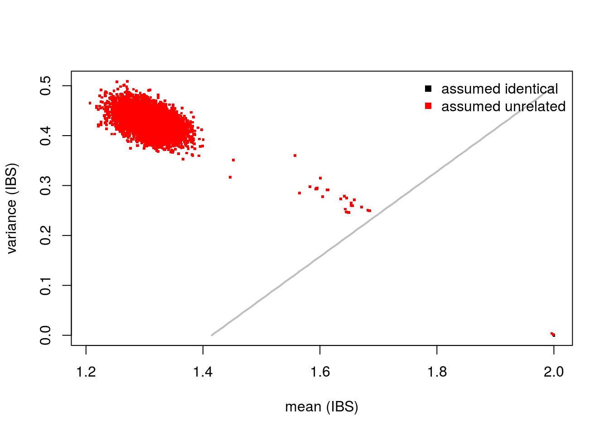

Using MethylAid
We now have the data we need to commence quality control, but some reformatting is needed. The MethylAid (Luijk, 2014) package that we developed requires the targets data frame to store IDAT file root names in a Basename column. Sometimes, data comes with a sample sheet to faciliate this, but in this case the information needs to be extracted from the supplementary file column instead.
## [1] "GSM3092700_9985178096_R01C01" "GSM3092701_9985178127_R03C02"
## [3] "GSM3092702_9986360109_R02C02" "GSM3092703_9985178087_R01C01"
## [5] "GSM3092704_9985178090_R01C01" "GSM3092705_9985178090_R04C01"The following sample quality control steps require the MethylAid and BiocParallel packages. Using parallel processing and/or batches will reduce both memory load and run-times when extracting intensities from IDAT files. Please see the MethylAid vignette for more details.
library(MethylAid)
library(BiocParallel)
BPPARAM <- MulticoreParam(6)
sData <- summarize(targets, batchSize=50, BPPARAM=BPPARAM, base="../GSE113018/IDATs")## Start summarization ...## Summarize data in parallel...## Prepare data for plotting ...## ... Finished summarization.After this summarize(), the Shiny web application can be launched to visualize() the data and identify outliers. In this instance, there are no apparent outliers, but if found they can be removed from the dataset. To easier visualise if your data conforms to typical patterns, you can utilise the MethylAidData package alongside the background option. Darker blue colours indicate regions where many observations are found in the example data, and can serve as a guide for expected peak areas.
library(MethylAidData)
data(exampleDataLarge)
outliers <- visualize(sData, background=exampleDataLarge)
targets <- targets[!(rownames(targets) %in% rownames(outliers)), ]
This image shows an example of the plots available in MethylAid. Observations can be coloured by phenotype, outliers can be highlighted, and the background option can be toggled off and on.
Preparing targets
Before progressing further, it can help to take some time to get familiar with the targets data frame, removing duplicate information and converting variables to relevant classes.
library(tidyverse)
targets <- select(targets, geo_accession,
cohort = source_name_ch1,
sex = characteristics_ch1,
cc = characteristics_ch1.1,
age = characteristics_ch1.2,
growth = characteristics_ch1.3,
facial = characteristics_ch1.4,
cns = characteristics_ch1.5,
Basename)
targets$age <- as.numeric(targets$age)
str(targets)## 'data.frame': 138 obs. of 9 variables:
## $ geo_accession: chr "GSM3092700" "GSM3092701" "GSM3092702" "GSM3092703" ...
## $ cohort : Factor w/ 2 levels "FASD_discovery",..: 1 1 1 1 1 1 1 1 1 1 ...
## $ sex : Factor w/ 2 levels "gender: Female",..: 1 1 2 2 2 1 2 2 2 2 ...
## $ cc : Factor w/ 2 levels "disease state: control",..: 1 1 1 1 1 1 1 1 1 1 ...
## $ age : num 50 19 110 39 97 103 5 25 13 44 ...
## $ growth : Factor w/ 5 levels "growth: 1","growth: 2",..: 5 5 5 5 5 5 5 5 5 5 ...
## $ facial : Factor w/ 5 levels "facial: 1","facial: 2",..: 5 5 5 5 5 5 5 5 5 5 ...
## $ cns : Factor w/ 5 levels "cns: 1","cns: 2",..: 5 5 5 5 5 5 5 5 5 5 ...
## $ Basename : chr "GSM3092700_9985178096_R01C01" "GSM3092701_9985178127_R03C02" "GSM3092702_9986360109_R02C02" "GSM3092703_9985178087_R01C01" ...This data frame consists of 138 observations, with 46 fetal alcohol spectrum disorder (FASD) cases and 92 controls, and phenotypic information for 36 variables is stored after cleaning. This includes values that quantify the severity of FASD in cases, such as facial, growth, and cns, as well as covariates we want to adjust for in the analysis, like age and sex.
Creating an RGset
For the rest of the pipeline, our data will need to be available as an RGChannelSetExtended object. Reading in large numbers of IDAT files is memory-intensive and time-consuming. Therefore, our DNAmArray package offers the read.metharray.exp.par() function, which distributes the IDAT files to each of the workers registered using BiocParallel. It then passes them in batches to read.metharray.exp() from minfi (Feinberg, 2014) and combines the returned RGset objects.
library(DNAmArray)
register(MulticoreParam(6))
RGset <- read.metharray.exp(base="../GSE113018/IDATs", targets, verbose=FALSE, extended=TRUE)Reading data in parallel is subject to errors and debugging is often difficult. Recently, BiocParallel has been extended with a comprehensive set of functions for debugging on various parallel architectures. If problems arise, we recommend using BatchJobsParam() with the log=TRUE option in order to facilitate resolution.
Our data is now an RGset object that can used for visualization. You can see below that inside this object the colData holds the same information as targets, and that there are 5 assay layers. The annotation information tells us that the methylation was measured using a 450k array and that hg19 is the reference genome.
## class: RGChannelSetExtended
## dim: 622399 138
## metadata(0):
## assays(5): Green Red GreenSD RedSD NBeads
## rownames(622399): 10600313 10600322 ... 74810490 74810492
## rowData names(0):
## colnames(138): GSM3092700_9985178096_R01C01
## GSM3092701_9985178127_R03C02 ... GSM3093566_9020331152_R05C01
## GSM3093567_9020331152_R06C01
## colData names(35): title public_date ... Basename filenames
## Annotation
## array: IlluminaHumanMethylation450k
## annotation: ilmn12.hg19Beta values
In order to further visualize the data, we store the beta values using the getBeta() function from minfi (Feinberg, 2014). The type="Illumina" option adds 100 to the denominator of the beta-value calculation, preventing NA values being recorded when the methylated and unmethylated signal are both 0.
Beta density plots
Using densityPlot() from minfi (Feinberg, 2014), we can visualize the per sample average beta-value distribution. This gives us a global impression of the data and allows us to identify possible anomalous samples. We expect this distribution to be bimodal with the peaks representing methylated and unmethylated signals. Any centre peaks should be further investigated for problems, such as ambiguous mapping.
library(minfi)
ggbg <- function() {
points(0, 0, pch=16, cex=1e6, col="grey90")
grid(col="white", lty=1)
}
par(mar=c(4,4,3,2), mgp=c(2.5,1,0),
cex.main=1.5, font.main="1",
fg="#6b6b6b", col.main="#4b4b4b")
densityPlot(RGset,
main="Beta density plot",
xlab="Beta values",
panel.first=ggbg()) 
For this data, the density plot is clearly bimodal with no obvious outliers.
Principal components plot
Using the prcomp_irlba() function from irlba we can calculate principal components. By assessing the amount of variance explained by these and visualising them, we can better interpret the data. The package ggfortify helps ggplot2 interpret PCA objects, allowing prcomp objects to be passed to the autoplot() function.
## Importance of components:
## PC1 PC2 PC3 PC4 PC5 PC6
## Standard deviation 14.4041 10.1145 7.65700 6.83199 4.96062 3.7490
## Proportion of Variance 0.2303 0.1136 0.06509 0.05182 0.02732 0.0156
## Cumulative Proportion 0.2303 0.3439 0.40903 0.46085 0.48817 0.5038
In this instance, our principal components explain over 50% of the variance in the data and there is evidence of clustering in the plot. By passing the original data to the autoplot() function using the data option, we can investigate clustering by colouring candidate variables. Our data has yet to undergo probe masking, which removes sex chromosome data, so groups of principal components according to whether an individual is male or female appear in the plot.
Checking Sample Relationships
omicsPrint (Van Iterson, 2018) is a package we developed to detect data linkage errors through inspecting sample relations in multiple omics studies. Included with the package is the hm450.manifest.pop.GoNL data, which stores SNP probe information in a GRanges class object. This is then used to create a subset of the beta values for genotyping.
library(omicsPrint)
data(hm450.manifest.pop.GoNL)
cpgs <- names(hm450.manifest.pop.GoNL[mcols(hm450.manifest.pop.GoNL)$MASK.snp5.EAS])
cpgs <- na.omit(match(cpgs, rownames(betas)))
omicsBetas <- betas[cpgs,]
omicsBetas[1:10, 1:2]## GSM3092700_9985178096_R01C01 GSM3092701_9985178127_R03C02
## cg08477687 0.54468085 0.54966887
## cg00645010 0.24275471 0.32130207
## cg11422233 0.13955638 0.13357683
## cg06402284 0.06851498 0.07967445
## cg01551879 0.03843844 0.04584362
## cg20788133 0.77454387 0.79749373
## cg09139287 0.55564877 0.32102593
## cg23100540 0.32690807 0.38246177
## cg23999112 0.74222364 0.75032102
## cg01062849 0.88731665 0.88230847The function beta2genotype() then genotypes the observations by measuring homozygous or heterozygous alleles at these SNP probes. Lastly alleleSharing() assesses the relationships between different individuals, which can be unrelated, twins, or identical. The results can then be visualised using the inferRelations() function.
## [1] 779 138## GSM3092700_9985178096_R01C01 GSM3092701_9985178127_R03C02
## cg12213037 2 3
## cg19405842 2 1
## cg01296877 2 3
## cg21783012 2 2
## cg10091792 3 3## mean var colnames.x colnames.y
## 1 2.000000 0.0000000 GSM3092700_9985178096_R01C01 GSM3092700_9985178096_R01C01
## 2 1.644416 0.2474334 GSM3092701_9985178127_R03C02 GSM3092700_9985178096_R01C01
## 3 1.682927 0.2502351 GSM3092702_9986360109_R02C02 GSM3092700_9985178096_R01C01
## 4 1.594352 0.2953922 GSM3092703_9985178087_R01C01 GSM3092700_9985178096_R01C01
## 5 1.290116 0.4504292 GSM3092704_9985178090_R01C01 GSM3092700_9985178096_R01C01
## 6 1.317073 0.4147595 GSM3092705_9985178090_R04C01 GSM3092700_9985178096_R01C01
## relation
## 1 identical
## 2 unrelated
## 3 unrelated
## 4 unrelated
## 5 unrelated
## 6 unrelated
Since there are no twins or relatives in our data, all observations are shown as unrelated. In data with sample relationships, this would be shown in the above graph as green or black clusters (Van Iterson, 2018). It is important to carry out this type of visualization before probe-filtering as otherwise the genotyping will be based on very few SNPs.